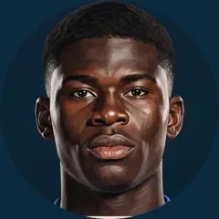

history_edu
Football has a memory.
This is the ARCHV.
A curated history of the beautiful game, delivered with the depth it deserves. No noise. Just the archive.
The Collection
Select the institutions you wish to follow through time.

Real Madrid
124 Years of History
Liverpool
131 Years of History

AC Milan
124 Years of History

Juventus
126 Years of History
Bayern Munich
124 Years of History

Arsenal
137 Years of History
One daily wrap.
Nothing else.
No breaking news, no rumors. Just a singular, cinematic brief of the day's historic significance at 8:00 AM.